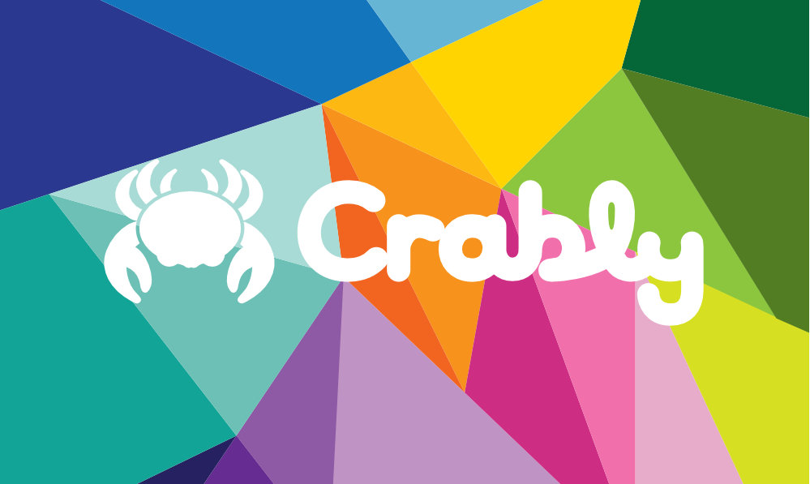
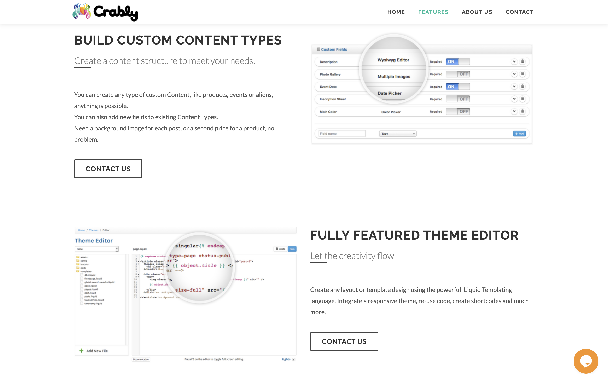
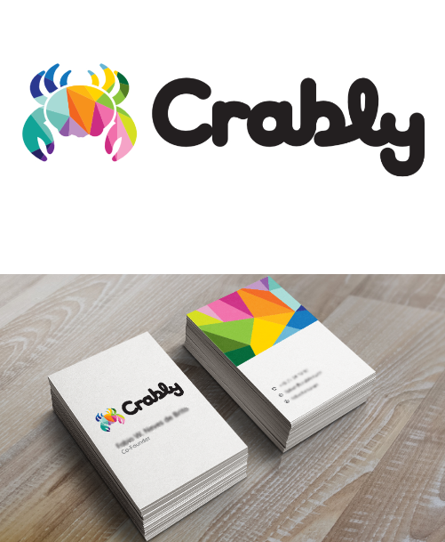

03: THE SOLUTION
A crab, a colour palette, and a point of view.
The final brand identity integrates a stylised geometric crab with rounded, bold typography and a vibrant multi-colour palette, communicating creativity and approachability while standing distinctly apart from CMS competitors.




Crab symbol
Stylised geometric crab captures the brand name while symbolising adaptability. Clean and modern, appeals to both technical and creative audiences.

Typography
Rounded, bold typeface conveys approachability and reflects the platform's user-friendly mission. Playful without sacrificing professionalism.

Colour palette
Coral, blue, green, and yellow. Multi-coloured geometric patterns within the crab represent creativity and diversity, ensuring competitive market standout.

Scalability
Clean geometric design ensures clarity and recognisability from small icons to large promotional materials across all digital touchpoints.